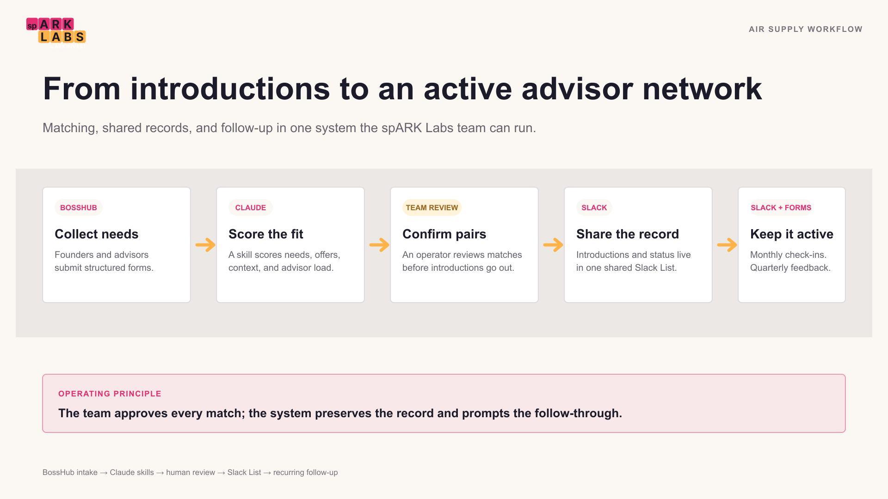

AIR Supply: automating founder-advisor matching for a startup incubator

spARK Labs by ARK Invest is a nonprofit innovation hub in St. Petersburg, Florida, that gives founders and entrepreneurs the insights, intelligence, and resources to help new ideas take form. AIR Supply is its advisor matching program: founders describe what they need, advisors describe what they can offer, and the program pairs them up. This project turned that matching process, and the follow-up after it, into a system the spARK Labs team can run and maintain on its own.
The existing process relied on the team manually reviewing form submissions, matching founders to advisors by hand, and reaching out on Slack to introduce each pair. It worked, but nothing about it survived past the moment it happened. There was no lasting record of who was matched to whom, and every follow-up after an introduction was manual. In partnership with altr, spARK Labs turned the process into a repeatable system built with Claude skills, a shared Slack List, and structured BossHub feedback forms.
Matching founders to advisors
A Claude skill reads every submission from the founder and advisor BossHub forms and scores each possible pairing based on overlapping needs and offers, alignment across three support categories, and free-text context. It weighs specific tag overlap most heavily, then uses the founder's and advisor's own words to break ties or catch a fit that a checkbox would miss.
When two candidates are close, the skill also spreads founders across advisors so no single advisor ends up carrying every match by default. Proposed pairs are shown to the team for review before anything goes out. Once confirmed, the skill sends a short Slack introduction directly to the founder and advisor.
A shared database, not a personal account
The earlier process had no durable record of its matches. Founder and advisor submissions live in BossHub, but nothing tied a founder to the advisor they'd actually been paired with once that decision was made. The only lasting trace of who was paired with whom was scattered across old Slack messages, so reconstructing the program meant searching chat history instead of checking a single source of truth.
The fix was AIR Supply Matches, a Slack List visible and editable by anyone at spARK Labs rather than tied to one person's Claude account. Every confirmed match, its status, and every check-in and feedback date now lives in one shared table instead of a person's memory or a chat history.
Monthly check-ins on both sides of the match
A second skill runs on its own every month: a recurring scheduled task wakes it up with no one at spARK Labs needing to ask for it, and it checks the Slack List for any match that hasn't had a recent check-in. It messages the advisor and founder separately with a short, direct question about how the connection is going. Each message logs its own date back to the Slack List, so the next run knows exactly who is due and who isn't. An advisor with several founders gets one message covering all of them instead of a flood of separate pings.
Quarterly feedback in a structured form
Slack messages are useful for a quick pulse check, but not for anything that needs to be counted or compared across matches. On that same monthly run, the skill separately checks whether it's been three months since a match's last feedback form and, if so, routes both sides to a short BossHub feedback form. Founders and advisors answer a handful of questions about engagement, progress, and remaining needs in a format the program can analyze over time, instead of leaving free-text replies buried in Slack.
Together, these skills turn AIR Supply from a manual, single-person process into a system the spARK Labs team runs on its own: matching that scores and proposes pairs for review, a shared record everyone can see, and two independent follow-up cadences that keep connections from going quiet after the initial introduction.